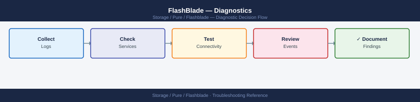

FlashBlade — Diagnostics¶

Before you begin¶
- Access: FlashBlade admin credentials (SSH to management IP or Purity//FB web GUI); Pure1 portal access
- Gather first: the specific symptom (client cannot mount, alert in Pure1, replication stopped, performance degraded), the affected filesystem or bucket name, and when the issue started
- Scope: confirm whether the issue affects one filesystem, one protocol (NFS only vs. S3), one blade, or the entire array
- Phone-home: verify Pure1 phone-home is active (
purefb array listshows phone-home status) — most hardware alerts are auto-detected by Pure
Step 1 — Check array health and active alerts¶
# Connect to FlashBlade management CLI
ssh pureuser@<flashblade-management-ip>
# Overall array status, Purity//FB version, and capacity
purefb array list
# Key fields:
# Version: Purity//FB version (confirm matches support matrix)
# Space.Used / Space.Total: overall capacity utilization
# Status: online (expected); degraded = hardware issue
# All active alerts (most critical first)
purefb alert list
# Expected: no alerts; or only informational (severity=info)
# Problem: severity=warning or severity=error alerts
# Common alerts: blade degraded, drive failure, capacity > 80%, replication lag
# Include resolved alerts for history (last 7 days)
purefb alert list --filter "time>='7 days ago'" | head -50
# Audit log (admin actions — useful if a config change caused the issue)
purefb admin list --audit | tail -50
Connected to 10.20.50.15.
purity-fb-01> purefb array list
Name Version Status Space.Used Space.Total
purity-fb-01 4.10.2 online 18.2TB 102.4TB
purity-fb-01>
purity-fb-01> purefb alert list
ID Severity Code Message Time
1847 info BLADE_TEMP_WARNING Blade-3 temperature nominal 2024-01-15 14:32:10
1846 warning DRIVE_PREDICTIVE_FAIL Drive SSD-7-2 predictive failure 2024-01-15 13:18:45
1845 error REPLICATION_LAG Replication lag > 1 hour 2024-01-15 12:05:22
purity-fb-01>
purity-fb-01> purefb alert list --filter "time>='7 days ago'" | head -50
ID Severity Code Message Time
1847 info BLADE_TEMP_WARNING Blade-3 temperature nominal 2024-01-15 14:32:10
1846 warning DRIVE_PREDICTIVE_FAIL Drive SSD-7-2 predictive failure 2024-01-15 13:18:45
1845 error REPLICATION_LAG Replication lag > 1 hour 2024-01-15 12:05:22
1844 info CAPACITY_THRESHOLD Capacity utilization 82% 2024-01-14 09:47:33
1843 warning BLADE_DEGRADED Blade-5 operating in degraded 2024-01-13 16:22:11
purity-fb-01>
purity-fb-01> purefb admin list --audit | tail -50
Time Admin Action Resource Details
2024-01-15 15:42:18 pureuser modify nfs-export-01 Changed access_list
2024-01-15 14:28:05 automation create snapshot-daily Scheduled snapshot created
2024-01-15 13:15:33 pureuser delete old-vol-backup Volume deleted
2024-01-15 12:01:22 sysadmin modify replication-01 Target changed to dr-site-02
2024-01-14 10:33:44 pureuser create nfs-export-02 New export created
purity-fb-01>
Common errors
Connection refused — Verify the FlashBlade management IP is correct and SSH is enabled; check firewall rules allowing port 22 to the management interface.
purefb: command not found — Ensure you are logged into the FlashBlade CLI (after ssh connection succeeds); if using a jump host, SSH directly to the management IP instead.
Alert severity=error or severity=warning present — Cross-reference the alert code and timestamp with the audit log to identify recent config changes, then consult Pure Storage support matrix for the specific alert remediation steps.
Step 2 — Check blade and hardware health¶
# Blade health and capacity contribution
purefb blade list
# Each blade shows: Name, Status, Capacity, RawCapacity
# Expected: Status = healthy for all blades
# Problem: Status = unhealthy or failed → open Pure SR immediately
# Full chassis hardware status (power supplies, fans, chassis modules)
purefb hardware list
# Each component shows: Name, Status, Temperature
# Expected: Status = ok for all hardware
# Problem: any Status = failed or warning → open Pure SR
# Network interface status (data and management VIPs)
purefb network interface list
# Shows: name, address, enabled, speed, services (management/replication/data)
# Expected: Enabled = True and Speed > 0 for all active interfaces
Name Status Capacity RawCapacity
blade-1 healthy 51.2TB 102.4TB
blade-2 healthy 51.2TB 102.4TB
blade-3 healthy 51.2TB 102.4TB
blade-4 healthy 51.2TB 102.4TB
Name Status Temperature
psu-1 ok 32C
psu-2 ok 31C
fan-module-1 ok 28C
fan-module-2 ok 29C
chassis-controller ok 45C
Name Address Enabled Speed Services
management-vip 10.20.1.100 True 1000Mbps management
replication-vip 10.20.2.50 True 10000Mbps replication
data-vip-1 10.20.3.100 True 10000Mbps data
data-vip-2 10.20.3.101 True 10000Mbps data
Common errors
Error: Invalid credentials or unable to connect to array — Verify the Pure FlashBlade management IP is reachable and your API token is valid with purefb --version and check network connectivity.
blade-X status: unhealthy — Contact Pure Storage support immediately and check blade logs with purefb blade list --verbose to identify the specific hardware failure.
network interface list: command not found — Ensure you are running the correct Pure FlashBlade CLI version; use purefb network interface list instead of purefb network list.
Step 3 — Check filesystem and bucket state¶
# List all filesystems with provisioned and used capacity
purefb filesystem list
# Columns: Name, Provisioned, Space Used, % Used, NFS/SMB/HTTP enabled
# Alert: % Used > 80% = approaching full; provisioned size may need increasing
# List S3 buckets with usage
purefb bucket list
# Columns: Name, Object Count, Space Used, Account
# Check NFS export policies
purefb policy list
purefb policy list <policy-name>
# Shows which filesystem the policy applies to and the NFS rules
# Check directory services (AD / LDAP) for authentication
purefb directoryservice list
# Expected: Enabled = True and Status = connected for configured AD/LDAP
# Check SMB shares (if using SMB protocol)
purefb share list
# Check object store accounts and users
purefb objectstoreaccount list
purefb objectstoreuser list
Name Provisioned Space Used % Used NFS SMB HTTP
data-prod 10.0 TB 8.2 TB 82% Yes Yes No
backup-archive 50.0 TB 12.5 TB 25% Yes No No
dev-scratch 5.0 TB 4.8 TB 96% Yes Yes Yes
Name Object Count Space Used Account
archive-2024 1,247,856 45.3 GB prod-storage
logs-retention 892,341 28.7 GB ops-team
...
Name Filesystem NFS Rules
nfs-prod-policy data-prod rw,no_root_squash,192.168.1.0/24
nfs-backup-policy backup-archive ro,root_squash,10.0.0.0/8
Name Enabled Status Type
corp-ad True connected Active Directory
ldap-secondary True connected LDAP
Name Filesystem Protocol Enabled
smb-data data-prod SMB3 Yes
smb-archive backup-archive SMB3 Yes
Name Created
prod-storage 2024-01-15T09:22:11Z
ops-team 2024-02-03T14:55:42Z
Name Account Access Type
admin-user prod-storage Full
backup-svc ops-team Read-Only
Common errors
Error: Policy 'nfs-invalid-policy' not found — Verify the policy name exists with purefb policy list and check for typos.
Error: Directory service connection failed: LDAP server unreachable — Confirm LDAP/AD server IP and port are correct, and network connectivity exists from the FlashBlade management interface.
Error: Filesystem 'data-prod' is 96% full — Increase provisioned capacity immediately with purefb filesystem update --name data-prod --provisioned <new-size> to prevent write failures.
Step 4 — Check replication health¶
# Replication link status and lag (ActiveDR or async replication)
purefb replication list
# Shows: Name, Status, Lag, Bytes Transferred, Paused
# Expected: Status = replicating; Lag = low (seconds to minutes for async)
# Problem: Status = broken or Paused = True
# Remote array connection details
purefb replication arrayconnection list
# Shows: remote array name, management IP, replication IPs, connection status
# Check network interface used for replication
purefb network interface list | grep replication
# Replication VIPs must be able to reach the remote array's replication VIPs
# Snapshot list (source of replication)
purefb snap list
# Shows: name, source filesystem/bucket, created time, size
Name Status Lag Bytes Transferred Paused
prod-to-dr-fs1 replicating 45s 2.3TB False
prod-to-dr-fs2 replicating 2m 12s 5.7TB False
prod-to-dr-bucket-analytics replicating 1m 8s 892GB False
Name Management IP Replication IPs Status
flashblade-dr-01 203.0.113.42 203.0.113.100-103 connected
flashblade-dr-02 203.0.113.43 203.0.113.104-107 connected
Name MTU Enabled Services
eth2 1500 True replication
eth3 1500 True replication
Name Source Created Size
fs1.1704067200 fs1 2024-01-01 12:00:00 450GB
fs1.1704153600 fs1 2024-01-02 12:00:00 455GB
bucket-daily.1704067200 analytics-bucket 2024-01-01 12:00:00 125GB
bucket-daily.1704153600 analytics-bucket 2024-01-02 12:00:00 128GB
...
Common errors
replication link status: broken — Verify network connectivity between replication VIPs using ping and check firewall rules allow port 443 bidirectionally.
command not found: purefb — Install the Pure Storage Python SDK with pip install purestorage or ensure the FlashBlade CLI tools are in your PATH.
connection refused on remote array — Confirm the remote array's replication VIPs are reachable and that the replication link was accepted on the destination array using purefb replication arrayconnection approve.
Step 5 — Diagnose performance issues¶
# Array-level throughput, IOPS, and latency
purefb array --performance
# Key metrics:
# read_bytes_per_sec / write_bytes_per_sec → throughput
# reads_per_sec / writes_per_sec → IOPS
# usec_per_read_op / usec_per_write_op → latency in microseconds
# Filesystem-level performance (shows per-filesystem breakdown)
purefb fs list --performance
# Sort filesystems by write throughput to find hot spots
purefb fs list --performance | sort -k3 -rn
# Performance targets for FlashBlade:
# NFS sequential I/O: < 1 ms latency expected for large I/O
# NFS small random I/O: < 5 ms latency
# S3 object GET/PUT: < 5 ms latency
# S3 bucket performance
purefb bucket list --performance
# Network interface utilization (check if NICs are saturated)
purefb network interface list
# Check Speed vs. actual throughput from purefb array --performance
=== Array Performance ===
Name Read(B/s) Write(B/s) Reads/s Writes/s Read_Lat(us) Write_Lat(us)
flashblade-prod 8.2GB 3.1GB 125000 45000 487 612
=== Filesystem Performance ===
Name Throughput(B/s) IOPS Latency(us)
data-warehouse 2.8GB 98000 521
archive-nfs 1.2GB 42000 687
backup-tier2 890MB 31000 743
temp-scratch 456MB 18000 892
...
=== S3 Bucket Performance ===
Bucket Read(B/s) Write(B/s) GET_Lat(us) PUT_Lat(us)
ml-training 1.5GB 780MB 2100 2800
logs-archive 340MB 120MB 3400 4200
=== Network Interfaces ===
Name Speed Status Throughput(B/s)
eth0 100Gbps up 8.9GB
eth1 100Gbps up 7.2GB
eth2 100Gbps up 6.8GB
eth3 100Gbps up 5.1GB
Common errors
purefb: command not found — Ensure the Pure Storage CLI is installed and the purefb binary is in your PATH, or source the Pure SDK environment setup script.
Error: Authentication failed — Verify your Pure FlashBlade credentials are configured via purefb login or check that your API token environment variable is set correctly.
Error: No filesystems found — Confirm that filesystems exist on the array and your user account has read permissions; use purefb fs list without filters to verify connectivity.
Common performance root causes:
| Symptom | Check | Action |
|---|---|---|
| Low NFS throughput | Client mount options | Use rsize=1048576,wsize=1048576 |
| High NFS latency | Network congestion | Check switch utilization and jumbo frames |
| S3 slow | Large object count in bucket | Optimize key prefix distribution |
| Blade degraded | purefb blade list |
Open Pure SR immediately |
Step 6 — Generate diagnostic bundle for Pure support¶
# Generate and upload diagnostic bundle (requires phone-home to be active)
purefb support diag
# This sends the diagnostic bundle to Pure Storage automatically via phone-home
# Confirmation: "Diagnostic information sent to Pure Storage support"
# If phone-home is not active, the bundle is saved locally
# Contact Pure Support to get the bundle download path
# What to include in the Pure Support case:
# - Array name and serial number: purefb array list
# - Purity//FB version: purefb array list (Version field)
# - Blade health: purefb blade list (full output)
# - Hardware health: purefb hardware list (full output)
# - Active alerts: purefb alert list (full output)
# - Filesystem or bucket details (if data-access related)
# - NFS mount options from affected clients: mount | grep nfs
# - Symptom description, start time, and business impact
Diagnostic bundle generation initiated...
Gathering system information from array fb-prod-01...
Collecting blade health data...
Collecting hardware telemetry...
Collecting alert logs...
Bundle size: 247.3 MB
Diagnostic information sent to Pure Storage support
Case reference: CS-2024-0847291
Phone-home delivery confirmed at 2024-01-15T14:32:18Z
Array Name: fb-prod-01
Serial Number: FB-7M2K9X4R1Q8V
Purity//FB Version: 4.3.2
Common errors
Error: Phone-home is not active on this array — Enable phone-home with purefb phonehome --enable or manually download the bundle from /var/log/pure/diag/ and contact Pure Support with the file path.
Error: Insufficient disk space for diagnostic bundle — Free at least 500 MB on the management network by removing old logs with purefb support diag --clear-old before retrying.
Error: Connection timeout to Pure Storage support servers — Verify network connectivity and firewall rules allow HTTPS outbound on port 443 to support.purestorage.com, then retry the command.
Log locations¶
| Source | Command | What to look for |
|---|---|---|
| Active alerts | purefb alert list |
Hardware faults, capacity warnings, replication errors |
| Alert history | purefb alert list --filter "time>='7 days ago'" |
Events leading up to the issue |
| Audit log | purefb admin list --audit |
Admin configuration changes |
| Replication | purefb replication list |
Replication lag and broken links |
| Performance | purefb array --performance |
Throughput, IOPS, latency metrics |
| Pure1 portal | pure1.purestorage.com → Arrays → select array → Events | Phone-home events and alert timeline |
See also¶
Verify resolution¶
purefb alert listshows no active alerts (or only informational)purefb blade listshows all blades with Status = healthy- NFS test mount from an affected client succeeds and I/O test (e.g.,
dd if=/dev/zero of=/nfs/test bs=1M count=1000) completes at expected throughput purefb replication listshows Status = replicating with lag within expected boundspurefb array --performanceshows latency within the expected thresholds listed above